← 返回阅读库 · 原论文目录
论文讲解阅读文档 · 多模态语言模型 · v023
GroupViT Semantic Segmentation Emerges from Text Supervision[2202.11094]
视频时长 00:11:07；讲解文字 5,440 字符；提取讲解画面 20 张。按视频原顺序阅读，每段文字保留时间戳。
文字来自整段视频的自动语音转写，按自然停顿分段，并与 PPT / 论文页面 / 演示画面对齐。未将讲解压缩为摘要；术语、数字和口述公式请结合画面及原论文核对。 阅读稿已校正规范部分明确术语误识别；原始逐字稿和每处修改记录另行保留。
讲解画面为源视频截图（640×360），不是可编辑 PPT 文件。全片按每秒 2 帧扫描内容变化，逐步展开页保留；连续动画保留代表画面。清晰度受源视频限制。
下载完整资料包 · 含离线 HTML、PDF、Word、全部 PPT 画面和字幕。
原论文与材料
GroupViT: Semantic Segmentation Emerges from Text Supervision · 下载完整 PDF（18 页）
按时间阅读
00:00:00–00:00:22 · 画面 001
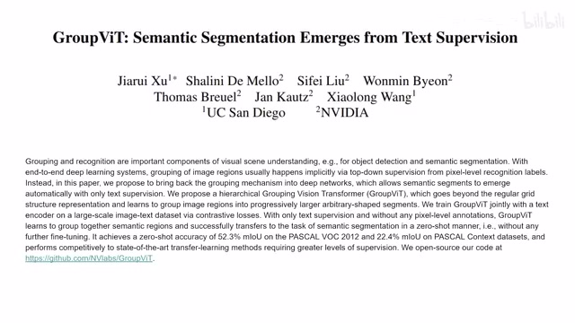
00:00:00–00:00:22 · 画面 001大家好,今天我们来快速水一篇论文 GroupVIT Semantic Segmentation Emerges from Text Supervision 这篇论文是很有意思的，把这个文字作为监督，而不是我们传统的这种像素分割好的这些 mask 作为监督，用它来做一个 Zero-Shot 的 Semantic Segmentation，就是语义分割。那我们下面直接来看
00:00:22–00:01:12 · 画面 002
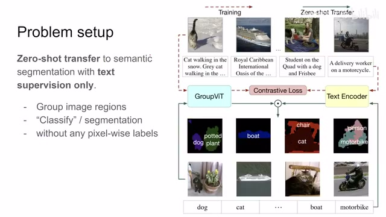
00:00:22–00:01:12 · 画面 002首先一个问题的定义那么在这个问题里面我们需要一张图像还有和这个图像相匹配的描述这个图像的文字那么通过一系列的训练在训练完了之后我们只要输入一张图像然后输入这个图像中可能存在的这些物体的种类然后我们这个模型就会帮我们分割出来比如说这里一条很好的船这个狗和这个盆栽等等那分出来的结果就应该是这样子的那么从结果来看这是一个典型的这个 Semantic Segmentation就是语义分割问题但是在它训练的过程中首先第一没有用到传统的这种语义分割使用的这种每个像素级别的这种 Mask作为监督
与之相对的它使用的是自然语言这个文字描述来作为对这个图像的这个训练的一个监督那么训练好的模型
00:01:12–00:01:13 · 画面 003
00:01:12–00:01:13 · 画面 003可以直接稍加改动
00:01:13–00:01:22 · 画面 004
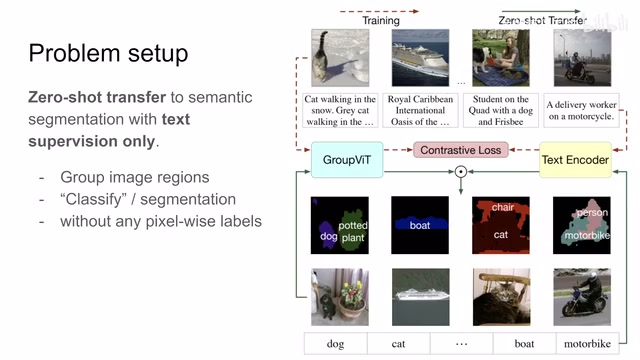
00:01:13–00:01:22 · 画面 004就来跑我们语义分割的任务所以它这里叫 Zero Shot Transfer因为它没有更多的样本在这个下游任务上做了训练那么这个
00:01:22–00:01:23 · 画面 005
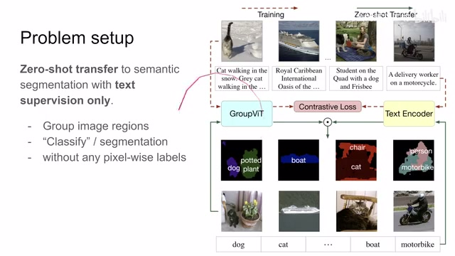
00:01:22–00:01:23 · 画面 005就是本文的一个
00:01:23–00:01:39 · 画面 006
00:01:23–00:01:39 · 画面 006主要的技术亮点那么本质上就是你先把图像分成一个个的物体对吧，根据它的像素的相似性，然后你再去找每一个物体它究竟对应具体的哪一种语义，哪一种类别。那么下面我们来看这个文章是怎么实现的，首先一个整体的结构，这里我们看到
00:01:39–00:03:39 · 画面 007
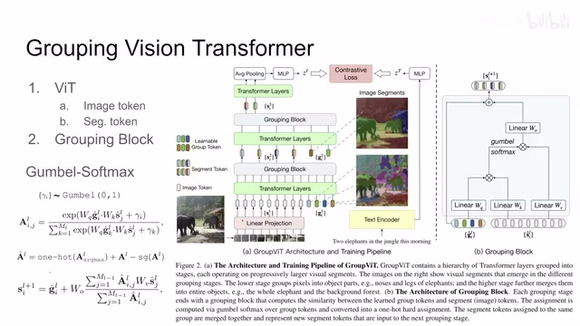
00:01:39–00:03:39 · 画面 007我们的输入是一张图像和一只图像相匹配的文字，文字的部分相对比较简单，它的一个描述你就进到一个 text encoder，就是一个 transformer，但是是自然语言里面的 transformer，用它然后提出来一个 embeddingemlp 放在这里我们准备后面使用，而这个图像的部分我们来看到还是标准的 vision transformer，拆成一个个不重叠的 patch，然后投影到 token一个是 image token，这个时候作者在这里加入了一部分的可学习的 group token
你把它理解成我们传统意义上的 classification token 就可以了，都是这种可学习的 token，只不过在这里我们想把图像分成很多块，每一块代表一种不同的物体，所以你这里的 group token 就多加一些，它本质上跟 classification token 一样都是这种可学习的，是实际上一开始没有任何意义的这种 token，但是后面我们会用它们来作为获取 representation 的一个手柄。那么到这里一步都还是标准的 Vision Transformer 的操作
然后送到 transformer layer 里面做 transformer 的运算，那么做完之后 token 的数量还是不变的，这就来到本文一个核心的技术要点就是 grouping block我们来具体来看一下这个 block，看到这边，首先 grouping block 它的输入有两部分，一部分是这个 group token 经过这个 transformer layer 之后这几个句柄我们说了，然后就是 image token 他们从 image 里来对吧。那么在这个 group block 里面，我们的 group token 先过一层 linear layer，然后我们的 image token 过两个不同的 linear layer
就是 query key 和 value 嘛，所以一共有三个 linear layer。然后呢，还是 query 和 key 它们相乘，乘出一个这个 similarity 这个矩阵来。那么在得到这个 similarity 矩阵之后呢，然后呢过一个这个 Gumbel-softmax，它本质上呢就是一个 softmax，但是具体的表达式呢你可以看到这边引入了这个 gamma 这个随机变量啊。这个随机变量呢是从这个 Gumbel distribution 独立采样出来的。那么采样出来之后呢，直接加到这个值上。
00:03:39–00:05:39 · 画面 008
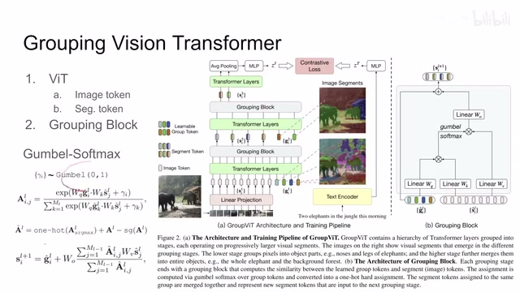
00:03:39–00:05:39 · 画面 008本质上是一种 reparameterization trick，感兴趣的朋友你可以直接去看其他论文。本质上它就是一个 softmax。那么 softmax 出来之后的作用就相当于我们有了一个映射，把我们的每一个 image token 这里的 image token 都能够找到一个和它相对的 group token，就相当于把 image token 绑到 group token 里面了，这就是它做 grouping 的核心。然后我们确定了这个关系之后，我们根据这个关系在这里。
把对应的 value 给它提出来，提出来之后呢再过一层 linear layer，和一开始这个输入的 group token 相加。那出来的结果呢就是这个 grouping block 它的这个输出。那总体来看这个 block 呢，本质上是一种 attention 对吧？它对比我们的 self attention 呢，self attention 里面 query key 和 value 都是从一组 token 里面。
自产自销嘛，要不为什么叫 self-attention 那在这里呢，它是根据 group token 来，根据 group token 的数量把我们的这个 image token 它的这些所有的信息聚集到这个 group token 里面。然后呢，它的输出只有 group token，这也就意味着呢，它相对于 self-attention 呢，输出的这个 token 的序列呢变得很短。所以它起到了一个减少 token 的数量然后汇总所有的信息的这样一个目的。那其中一个小细节，我们看到在得到这个 Gumbel-softmax 之后呢。
我们做了这里做了一个 softmax 之后，就是这个值出来之后呢，那作者首先做了一个 amount decoding。那这就相当于每一个 image token 就是它只能被分配到一个 group token 上。但是这样的操作呢我们没有办法传递梯度，所以呢这里作者就引入了一个操作，把我们原来的这个 similarity 这个值 attention 这个值对吧，加上然后呢再减去。
同样的这个值，但是这个值呢是没有梯度的。那这也就意味着你最后得到了这个输出的这个值本身这个变量的值是这个 1 号你 coding 之后的，但是它的梯度呢通过原始的这个 attention 这个矩阵给它传递下来了。这是一种很经典的 trick，你在这个 vqvae 里面用的也是一样的手法。那么还是这里一个公式就总结了这个 grouping block 里面发生的事情对吧？这个 query 和 key 先乘出来，乘出来这个 similarity 来。
00:05:39–00:07:08 · 画面 009
00:05:39–00:07:08 · 画面 009过这个操作操作完之后呢，取出相应的 token 投影，然后和原来的这个 group token 加起来。那从这个角度来看呢，你可以发现它跟我们之前介绍了这个 slot 的 attention 也是非常相近的，都是我们希望一个 token 能够绑定到一个 object 上。那么这个呢就是这个 grouping vip 的这个主体的这个结构。那么在实际的网络中呢，你可以不断的去叠加这两个模块，就是 grouping block 之后呢得出来的这个 token 呢，我再引入新的这个 group token，再通过 transformer，再通过这个 grouping block，我把这所有的这些信息都征流到这两个新的这个 group token 里面。
如果你高兴你可以继续往下叠对不对？那么叠到最后，总之你过完一个 grouping block 之后，最后剩下的数量就是这个 group token 的数量。然后这里做着操作，就是把一个 token 送到 transformer layer 里面，然后做这个 average pooling，就所有的 token 就变成一个，过一个 MLP，最后得到这个 representation，就是 image representation。它和我们的 tags，我们后面可以做各种 loss 去做匹配，来建立这样的关系。
那么下面呢，我们就来看有了这个 image token，有了这个 language token，我们怎么样把它开始训练。
00:07:08–00:08:19 · 画面 010
00:07:08–00:08:19 · 画面 010具体来说，跟 Clip 一样，就是你的图像的 token 跟语言的 token，它们算一个相似度。我们希望相关的样本它们的相似度高，不相关的样本它们的相似度低。本质上是一个 contrastive loss，是这样平淡无奇的一个 contrastive loss。但是这里有一个技巧，语言这个东西它是有 prompting 的作用，就是说同一种话你可以换不同的说法去说。这里你看到这一句话，两个大象在丛林里。
对吧？这一句话同时呢，因为我们是针对这个分割来做的，我们关心里面的这个名词，然后把名词提取出来呢，关键词对吧？大象和这个丛林。然后呢，这里用了一个 prompting，那我说这幅图像是描绘大象的图像，这幅图像是这个丛林的图像，对吧？都对啊。那么这两句话呢，它也应该跟我们原始的图像有较高的相似程度。所以说这三个样本呢，它们都应该跟我们原始的图像是相似的。那这里呢，这个 loss 呢就稍有变化。
我的一个视觉 token，它不只是对一种这个语言的这个 token，它是 positive sample，它可以有很多个这个 positive sample 对吧？因为你一幅图可以用不同的话去描述。那么这个呢，就是作者训练时使用的 loss 也是非常直接的。那么最后当这个模型训练结束了之后呢，我们怎么用它做这个 semantic segmentation 呢？那道理也很简单，就是直接看相似性就好了。你的这个图像进来对吧，拿到这里，拿到这个 segmentation token。
00:08:19–00:08:20 · 画面 011
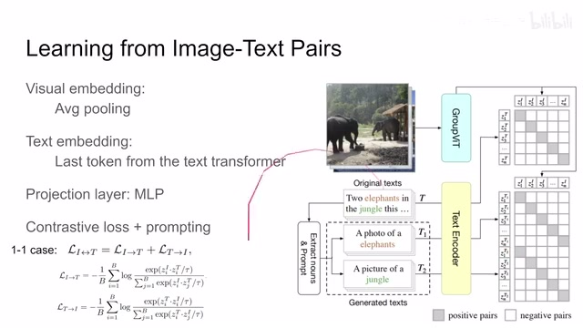
00:08:19–00:08:20 · 画面 01100:08:20–00:08:23 · 画面 012
00:08:20–00:08:23 · 画面 01200:08:23–00:09:26 · 画面 013
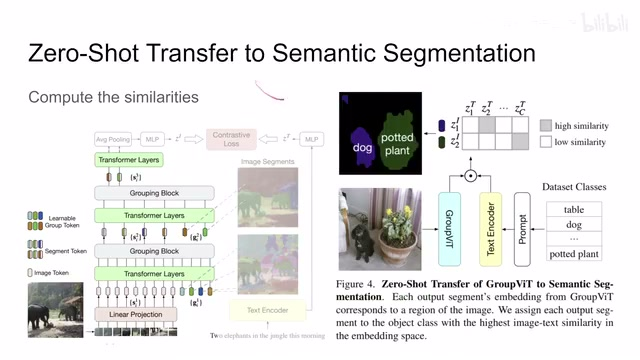
00:08:23–00:09:26 · 画面 013就可以了，就停止了，就不要再过这个后面的 average pooling，后面就不要过了。那这也就意味着你的一个图像会产生跟这个 group token 数量一致的这些 embedding。那每一个 embedding 呢，我们都可以去跟一个对应的句子，一个 prompting 的一个句子来看它们的相似程度。那比如说我们的这个数据集里面有这这么多这个类别啊，每一个类别呢，我都组成一句话。
放到我们这个 text encoder 里面。那 text encoder 之后呢，每一句话呢都变成了一个 embedding，就是这里。那么下面的任务呢，我们只需要看这个 vision 和这个 language 他们的这个 embedding 相似程度最大的一个地方，那这就说明这块区域它是这个类别，还是跟 clip 一样的很直接的算这个相似程度的方法，我们就知道每一个这个 visual token 它对应的这个文字上的类别是什么了。然后这个 visual token 呢，你再根据它一路上对吧，
00:09:26–00:09:27 · 画面 014
00:09:26–00:09:27 · 画面 01400:09:27–00:09:48 · 画面 015
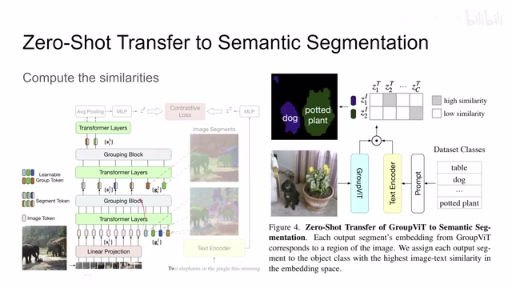
00:09:27–00:09:48 · 画面 015集合了哪个具体的哪一个 image token 对吧，一路路找回来。那么最终呢，就可以形成这样一个分割的这个图。那么这个呢，就是本文在训练之后如何直接 transfer 啊，zero-shot transfer 到这个 semantic segmentation 这个与分割这个下游的任务。好的，那么以上就是本文的主要的一个技术贡献了。那么下面我们来看作者汇报的结果。那首先呢是这个 ablations 啊，作者这一评价就是 soft 和这个 hard assignment。那 hard assignment 我们之前说了就是
00:09:48–00:09:57 · 画面 016
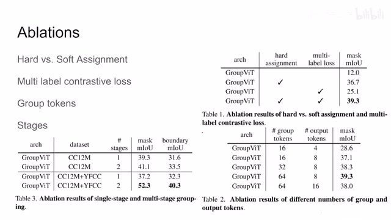
00:09:48–00:09:57 · 画面 01600:09:57–00:10:14 · 画面 017
00:09:57–00:10:14 · 画面 017在这里我们用这个 1 号的 encoding 做一下我们的这个 similarity matrix，然后把这个 gradient 接起来是这样一种情况，所谓的 soft assignment 就是我没有这些复杂的操作，我直接就用上面计算出来 attention matrix 直接用，这是这样的，同时作者还测了 multilabel contrastive loss，也就是我加上这个 prompting 就是一个 visual embedding 对应很多个 positive 的 language embedding，那么当然还有这个 group token 的数量
00:10:14–00:10:29 · 画面 018
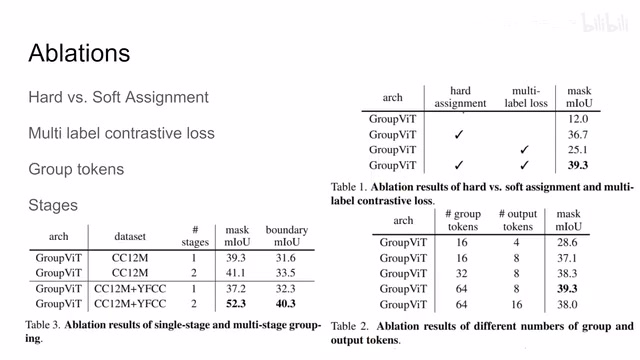
00:10:14–00:10:29 · 画面 018对吧，有多少集这个网络等等感兴趣的朋友呢可以到原文来查看，那最终的结果呢因为没有同类的方法嘛，他就是拼凑了一下，比如说这个 vit 加上不同的这个剧烈的方法啊来做这个 segmentation，那当然呢，本文的方法呢是肯定比他们要好很多的，那么还有这边这些自监督的方法等等啊，感兴趣的朋友呢非常推荐你到原文来看他的配置，那这边是一些 visualization 啊
00:10:29–00:11:07 · 画面 019
00:10:29–00:11:07 · 画面 019总的来说，本文是一个很有意思的使用自然语言来作为监督的这么一个做于分割的任务，你说效果它肯定不能指望它非常好，但是它的整个问题的设计是很有意思的，好的，那么以上就是我对这篇论文的一个简单的整理，那么感谢您的收看，再见
00:11:07–00:11:07 · 画面 020
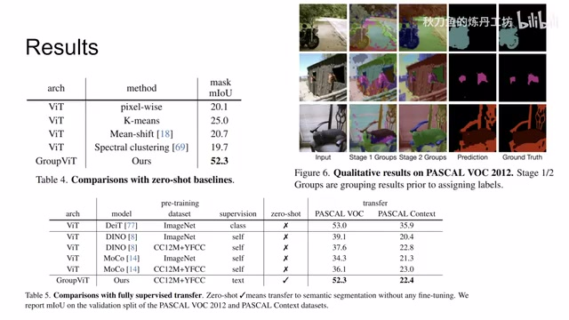
00:11:07–00:11:07 · 画面 020转写与来源说明 · 1 个自动复核提示
保留 67 个原始语音片段，1 个片段触发自动复核提示。提示仅用于定位可能的术语、重复或识别问题，不等于已确认错误。
讲解画面为源视频截图（640×360），不是可编辑 PPT 文件。全片按每秒 2 帧扫描内容变化，逐步展开页保留；连续动画保留代表画面。清晰度受源视频限制。
原视频：paper/合集_2026-10-16_多模态语言模型/[论文简析]GroupViT Semantic Segmentation Emerges from Text Supervision[2202.11094].mp4
SHA-256：2bb0ad82591d7ee11ff7f134f3f818fcd83f4f5c6199c1dd5b29782d86bcee83
这个 Semantic Segmentation
全文按视频语音与画面制作。原论文可从上方链接下载；完整资料包保留全文、原始逐字稿、字幕和校对记录。